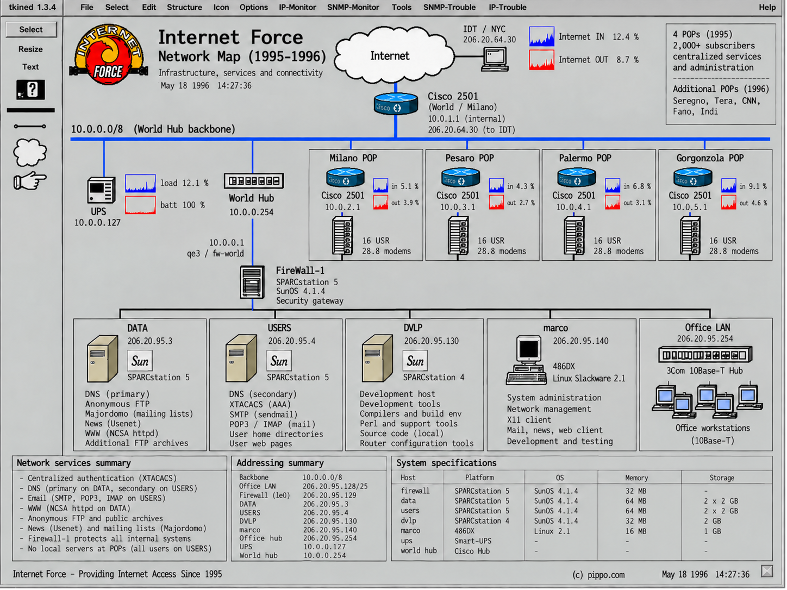
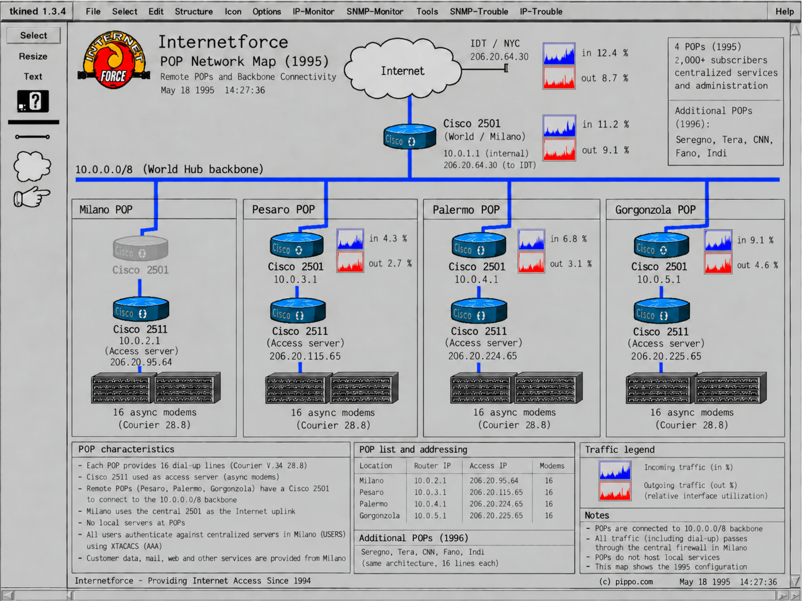
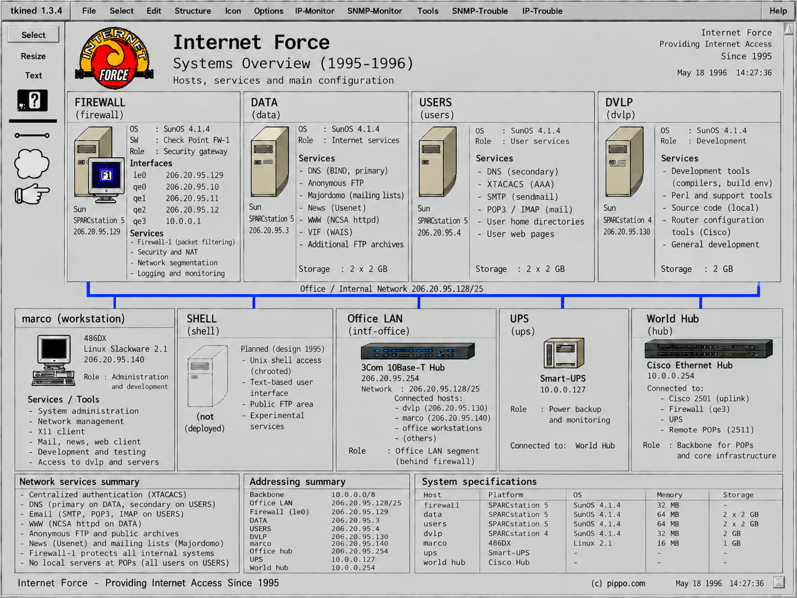

Internet Force 1995–1996
Esplora Internet Force
Due percorsi per esplorare l'archivio: il percorso narrativo «Costruire un Internet Force POP» e le tre mappe storiche interattive.
Costruire un Internet Force POP
Il percorso educativo che, partendo da sistemi appena installati, segue i passi reali di configurazione fino a un provider funzionante.
Esplora la rete
Tre mappe storiche ricostruite del 1995: seleziona un dispositivo o un sistema evidenziabile per aprirne configurazione o scheda tecnica.
-

Internet Force MapVista sintetica della rete: uplink IDT, firewall, server, workstation e POP. -

POP Network MapUplink centrale World/Milano e i POP di Milano, Pesaro, Palermo e Gorgonzola. -

Systems OverviewI sistemi centrali e dell'ufficio: FIREWALL, DATA, USERS, DVLP, marco, Office LAN.
Vuoi esplorare direttamente l'archivio, i file, le configurazioni e i materiali conservati? Visita il repository GitHub di Internet Force.
Contesto storico
- Note storiche — Xpert UNIX Systems, il periodo di formazione a Tel Aviv e il contesto organizzativo.
- Come si imparava Internet — competenza, autonomia e RTFM.